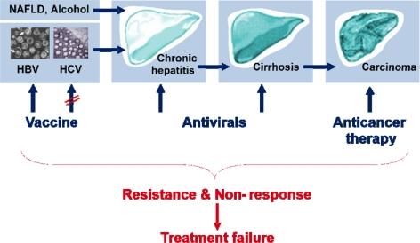

How identifying two viruses connected chronic infection to liver cancer — and why testing for them changed outcomes.
Two of the world’s leading causes of liver cancer are viruses we can test for — hepatitis B and hepatitis C.
In the 1960s, Dr Baruch Blumberg discovered the hepatitis B virus (HBV) — work that earned the 1976 Nobel Prize and led to a vaccine. The hepatitis C virus (HCV) remained a mystery “non-A, non-B” hepatitis until it was identified in 1989; that discovery was recognised with the 2020 Nobel Prize in Physiology or Medicine (Alter, Houghton and Rice).
Long-term (chronic) infection with HBV or HCV can quietly damage the liver for years, leading to cirrhosis and, in some people, liver cancer (hepatocellular carcinoma) — often with few early symptoms. Finding the virus makes it possible to monitor the liver, start treatment, and reduce spread. Modern antiviral medicines can now control HBV and cure most HCV infections.

This lab offers molecular testing for Hepatitis B Virus (HBV) and Hepatitis C Virus (HCV). See the Test List, or contact the lab to discuss sample requirements. Pricing is shared on enquiry.
Blumberg BS — discovery of the hepatitis B virus; Nobel Prize in Physiology or Medicine, 1976. · Alter HJ, Houghton M, Rice CM — discovery of the hepatitis C virus; Nobel Prize in Physiology or Medicine, 2020. · World Health Organization — hepatitis B and hepatitis C fact sheets and their link to liver cancer.
Tell us what you need — our team will help with sample requirements, turnaround, and reporting.